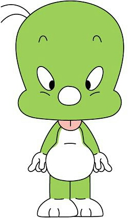

<과거의 저는요?>
안산에서 태어났구요,
초등학교, 중학교, 고등학교 모두 안산에서 나왔고요,
친구들과 어울리면서 둘리라는 별명을 가지고 있었어요..
왜 별명이 둘리인지?

보통 어릴적에는 생김새를 기준으로 별명을 가지는 것 같아요.
어렸을 적 많이 먹었던 탓인지 살이 찌면서 볼에도 살이 찌기 시작했답니다..
그래서 그런지 둘리라는 별명이 생겼고,
정말 둘리처럼 초능력이 생겼으면 좋겠다는 순수한 마음을 가지고 있었지요..